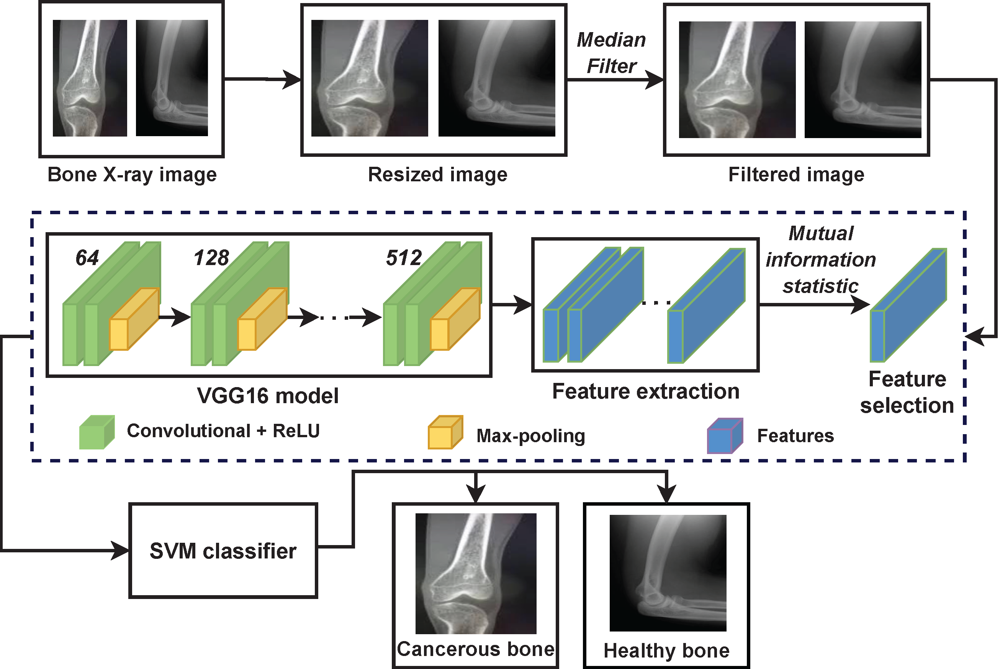

About
Computer software allows researchers to find patterns and analyze
extremely large datasets. Many premeds learn data science and
apply it to their projects. Additionally, premeds can learn to
program in coding languages like Python and R, which are
particularly useful for research. Computational odelling in health
care can be used to create simulations of complex biological
mechanisms and predict outcomes. Popular computational odelling
applications in medicine for premeds include tracking infectious
diseases, predicting drug side effects and calculating the effects
of public health interventions. Most recently, computational
models have been applied to COVID-19 outbreak predictions.
